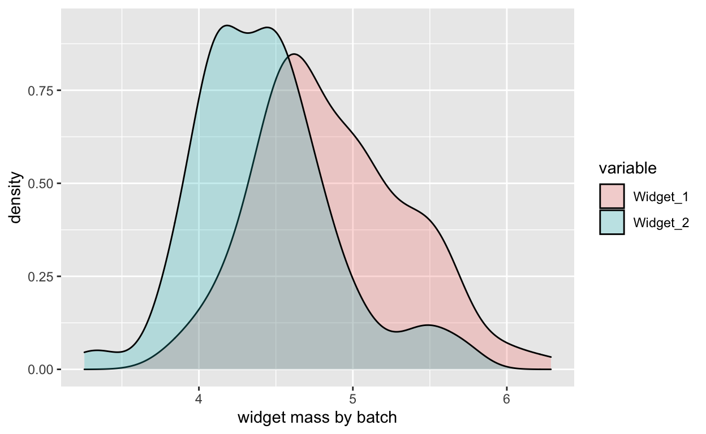

Faking it…
It is well-recognized that one of the virtues of the R language is the extensive tools it provides for working with distributions. Functions exist to generate random number draws, determine quantiles, and examine the probability density and cumulative distribution curves that describe each distribution.
This toolbox gives one the ability to create simulated data sets for testing very easily. If you need a few random numbers from a Gaussian distribution then rnorm is your friend:
rnorm(3)
[1] 0.1440807 -1.6972968 -1.4168098Imagine you were developing a new technique to determine if two methods of manufacturing widgets produced widgets of the same mass.1 Even before the widgets were manufactured, you could test your code by simulating widget masses using rnorm:

Variations on this approach can be used to simulate spectral data sets.2 The information I will share here is accumulated knowledge. I have no formal training in the theory behind the issues discussed, just skills I have picked up in various places and by experimenting. If you see something that is wrong or needs clarification or elaboration, please use the comments to set me straight!
What peak shape is expected for a given type of spectroscopy? In principle this is based on the theory behind the method, either some quantum mechanical model or an approximation of it. For some methods, like NMR, this might be fairly straightforward, at least in simple systems. But the frequencies involved in some spectroscopies not too different from others, and coupling is observed. Two examples which “interfere” with each other are:
After theoretical considerations, we should keep in mind that all spectroscopies have some sort of detector, electronic components and basic data processing that can affect peak shape. A CCD on a UV detector is one of the simpler situations. FT-IR has a mechanical interferometer, and the raw signal from both IR and NMR is Fourier-transformed prior to use. So there are not only theoretical issues to think about, but also engineering, instrument tuning, electrical engineering and mathematical issues to consider.
Even with myriad theoretical and practical considerations, a Gaussian curve is a good approximation to a simple peak, and more complex peaks can be built by summing Gaussian curves. If we want to simulate a simple peak with a Gaussian shape, we can use the dnorm function, which gives us the “density” of the distribution:
If we want this to look more like a “real” peak, we can increase the x range and use x values with realistic frequency values. And if we want our spectrum to be more complex, we can add several of these curves together. Keep in mind that the area under the density curve is 1.0, and the peak width is determined by the value of argument sd (the standard deviation). For example if you want to simulate the UV spectrum of vanillin, which has maxima at about 230, 280 and 315 nm, one can do something along these lines:
wavelengths <- seq(220, 350, by = 1.0)
Peak1 <- dnorm(wavelengths, 230, 22)
Peak2 <- dnorm(wavelengths, 280, 17)
Peak3 <- dnorm(wavelengths, 315, 17)
Peaks123 <- colSums(rbind(1.6 * Peak1, Peak2, Peak3))
plot(wavelengths, Peaks123, type = "l",
xlab = "wavelengths (nm)", ylab = "arbitrary intensity")
The coefficient on Peak1 is needed to increase the contribution of that peak in order to better resemble the linked spectrum (note that the linked spectrum y-axis is \(log \epsilon\); we’re just going for a rough visual approximation).
It’s a simple, if tedious, task to add Gaussian curves in this manner to simulate a single spectrum. One can also create several different spectra, and then combine them in various ratios to create a data set representing samples composed of mixtures of compounds. UV spectra are tougher due to the vibrational coupling; NMR spectra are quite straightforward since we know the area of each magnetic environment in the structure (but we also have to deal with doublets etc.). If you plan to do a lot of this, take a look at the SpecHelpers package, which is designed to streamline these tasks.
A relatively minor exception to the typical Gaussian peak shape is NMR. Peaks in NMR are typically described as “Lorentzian”, which corresponds to the Cauchy distribution (Goldenberg 2016). This quick comparison shows that NMR peaks are expected to be less sharp and have fatter tails:
For many types of spectroscopies there is a need to correct the baseline when processing the data. But if you are simulating spectroscopic (or chromatographic) data, how can you introduce baseline anomalies? Such anomalies can take many forms, for instance a linear dependence on wavelength (i.e. a steadily rising baseline without curvature). But more often one sees complex rolling baseline issues.
Let’s play with introducing different types of baseline abberations. First, let’s create a set of three simple spectra. We’ll use a simple function to scale the set of spectra so the range is on the interval [0…1] for ease of further manipulations.
wavelengths <- 200:800
Spec1 <- dnorm(wavelengths, 425, 30)
Spec2 <- dnorm(wavelengths, 550, 20) * 3 # boost the area
Spec3 <- dnorm(wavelengths, 615, 15)
Spec123 <- rbind(Spec1, Spec2, Spec3)
dim(Spec123) # matrix with samples in rows
[1] 3 601Here are the results; the dotted line is the sum of the three spectra, offset vertically for ease of comparison.
One clever way to introduce baseline anomalies is to use a Vandermonde matrix. This is a trick I learned while working with the team on the hyperSpec overhaul funded by GSOC.3 It’s easiest to explain by an example:
[1] 601 3vdm[1:5, 1:3]
[,1] [,2] [,3]
[1,] 1 200 40000
[2,] 1 201 40401
[3,] 1 202 40804
[4,] 1 203 41209
[5,] 1 204 41616Looking at the first few rows of vdm, you can see that the first column is a simple multiplier, in this case an identity vector. This can be viewed as an offset term.4 The second column contains the original wavelength values, in effect a linear term. The third column contains the square of the original wavelength values. If more terms had been requested, they would be the cubed values etc. In the code above we also scaled the columns of the matrix so that the influence of the linear and especially the squared terms don’t dominate the absolute values of the final result. Scaling does not affect the shape of the curves.
To use this Vandermonde matrix, we need another matrix which will function as a set of coefficients.
[,1] [,2] [,3]
[1,] 0.1409040 0.3487193 0.3402532
[2,] 0.4740782 0.8426986 0.8967488
[3,] 0.9564882 0.4438944 0.6544713If we multiply the coefficients by the tranposed Vandermonde matrix, we get back a set of offsets which are the rows of the Vandermonde matrix modified by the coefficients. We’ll scale things so that Spec123 and offsets are on the same overall scale and then further scale so that the spectra are not overwhelmed by the offsets in the next step.
[1] 3 601offsets <- scale01(offsets) * 0.1
These offsets can then be added to the original spectrum to obtain our spectra with a distorted baseline. Here we have summed the individual spectra. We have added a line based on extrapolating the first 20 points of the distorted data, which clearly shows the influence of the squared term.
FinalSpec1 <- offsets + Spec123
plot(wavelengths, colSums(FinalSpec1), type = "l", col = "red",
xlab = "wavelength (nm)", ylab = "intensity")
lines(wavelengths, colSums(Spec123))
fit <- lm(colSums(FinalSpec1)[1:20] ~ wavelengths[1:20])
lines(wavelengths, fit$coef[2]*wavelengths + fit$coef[1],
col = "red", lty = 2) # good ol' y = mx + b
The Vandermonde matrix approach works by creating offsets that are added to the original spectrum. However, it is limited to creating baseline distortions that generally increase at higher values. To create other types of distortions, you can use your imagination. For instance, you could reverse the order of the rows of offsets and/or use higher terms, scale a row, etc. One could also play with various polynomial functions to create the desired effect over the wavelength range of interest. For instance, the following code adds a piece of an inverted parabola to the original spectrum to simulate a baseline hump.
In the plot, the dotted line traces out the value of hump * 0.1, the offset.
In the next post we’ll look at ways to introduce noise into simulated spectra.
Of course, this is simply the t-test.↩︎
For that matter, you can also simulate chromatograms using the methods we are about to show. It’s even possible to introduce tailing of a peak. For a function to do this, see the SpecHelpers package.↩︎
The work I’m showing here is based on original code in package hyperSpec by Claudia Belietes.↩︎
As a vector of 1’s it will have no effect on the calculations to come. However, you could multiply this column by a value to add an offset to your simulated spectra. This would be a means of simulating a steady electronic bias in an instrument’s raw data.